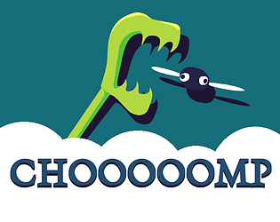
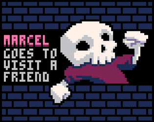

video games
I've always liked video games, and I've started making my own in 2023 after participating in my first game jam. All my games and prototypes are available on my itch.io page.
BLASTODROME
BLASTODROME is two-player PICO-8 game where you throw bombs at each other. It is based on Intercity 2048, a game I worked on with Scotaire and PBeS Studio for the 24 hours BBQ Game Jam 2024.
CHOOOOOMP

CHOOOOOMP is a solo scoring game where you play as a plant (?) which feeds on flies to grow. This game was primarily designed for smartphones, and uses the LÖVE game engine.
Marcel goes to visit a friend

Marcel goes to visit a friend is a short platformer made with PICO-8, and the first game I made that I would consider "finished".